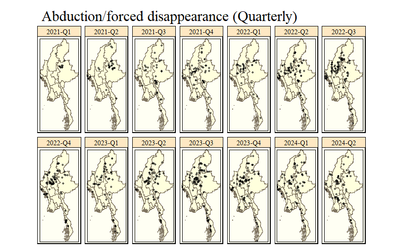
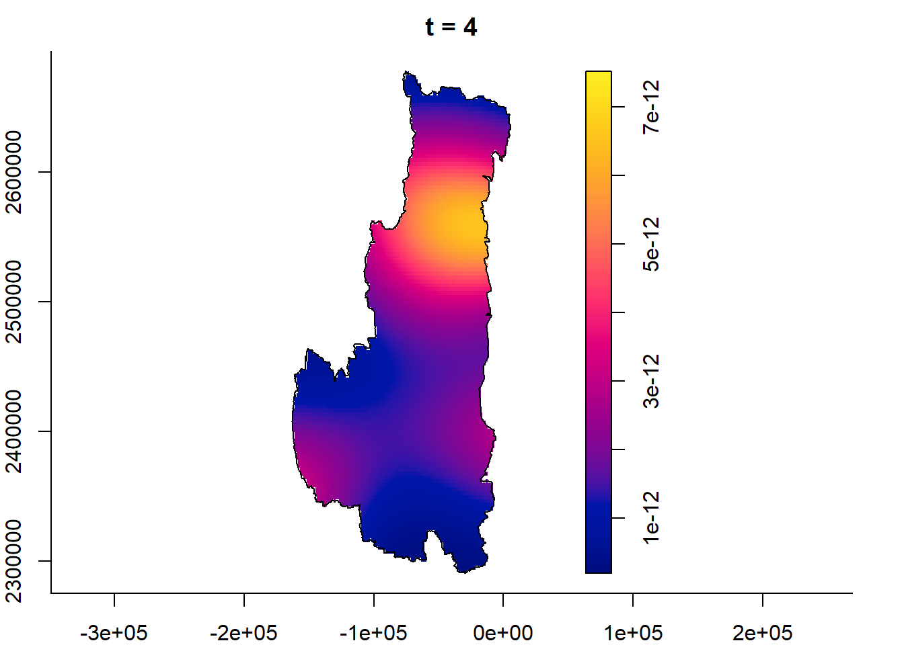
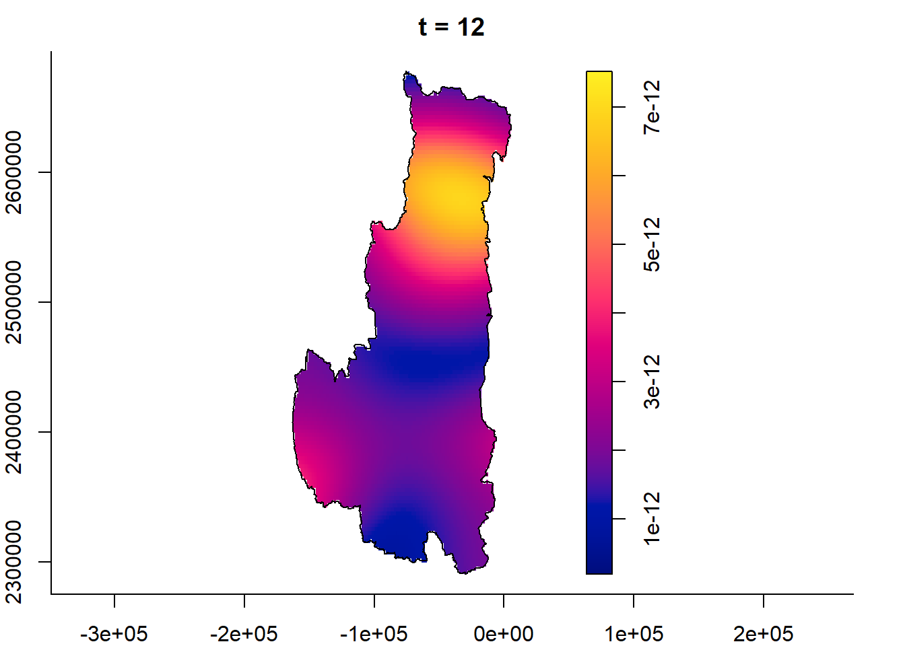
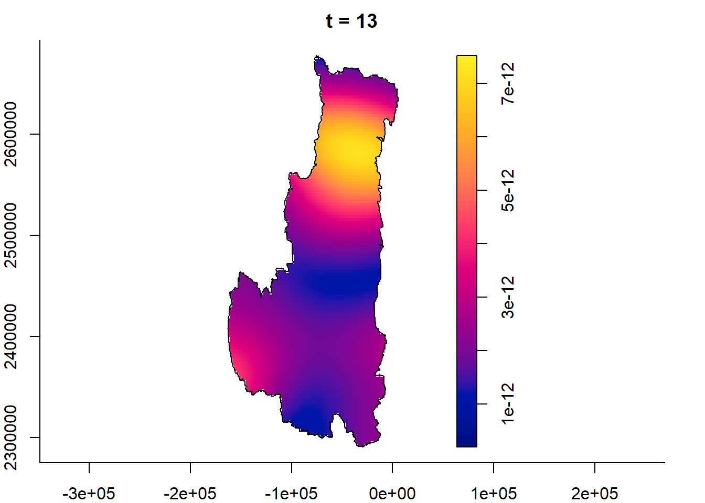
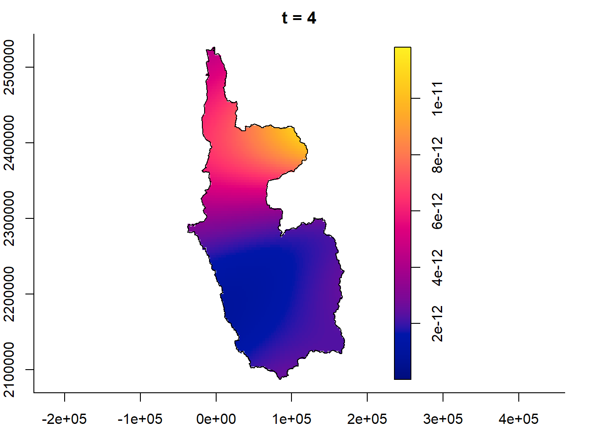
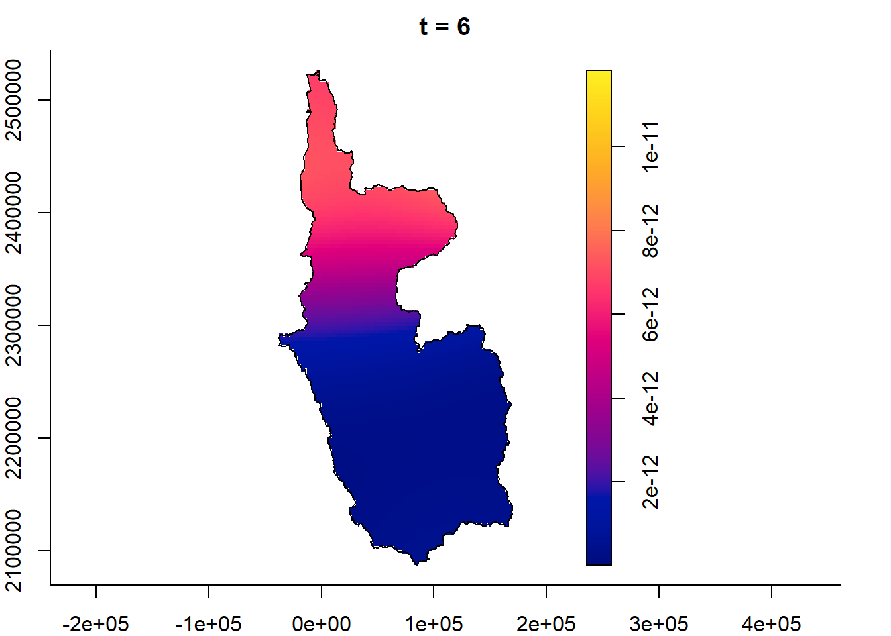
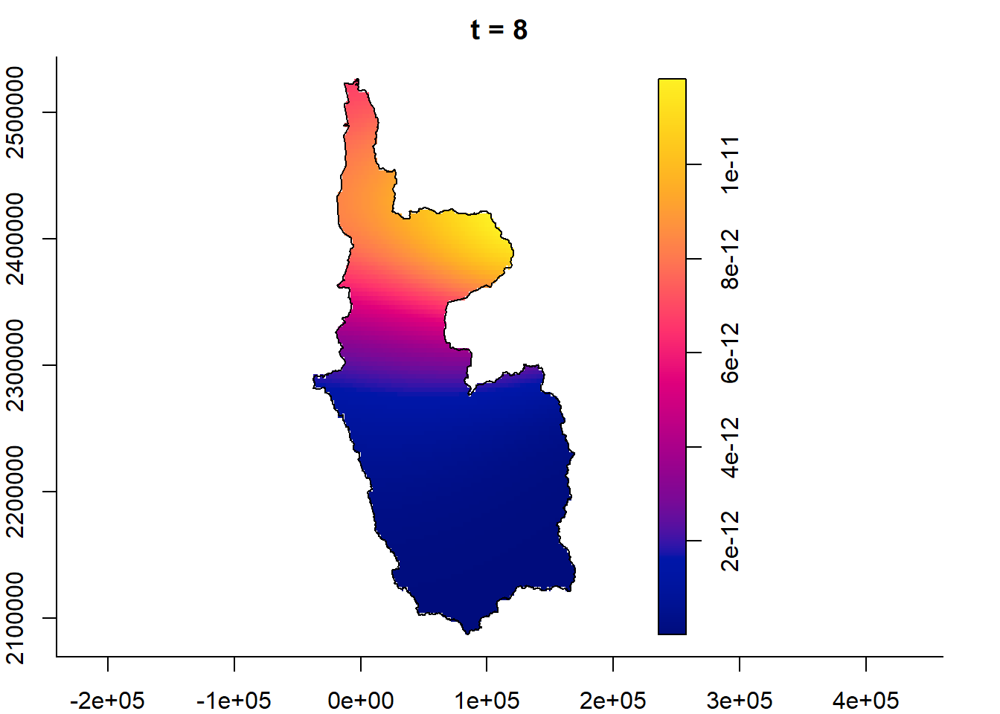
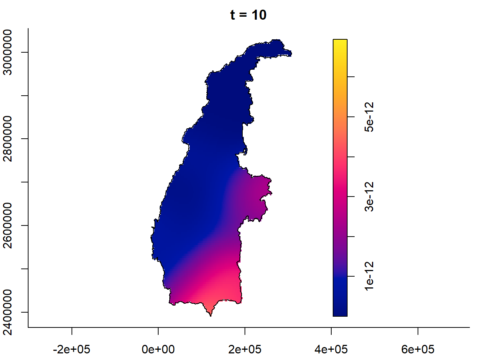

pacman::p_load(tidyverse, sf, spatstat, ggplot2, tmap, gifski, sparr, raster)01 Take Home Exercise 1
Geospatial Analytics for Social Good: Application of Spatial and Spatio-temporal Point Patterns Analysis to discover the geographical distribution of Armed Conflict in Myanmar
1 Objective
Geospatial analytics hold tremendous potential to address complex problems facing society. In this study, you are tasked to apply spatial point patterns analysis methods to discover the spatial and spatio-temporal distribution of armed conflict in Myanmar.
2 Tasks
The specific tasks of this take-home exercise are as follows:
Using appropriate function of sf and tidyverse packages, import and transform the downloaded armed conflict data and administrative boundary data into sf tibble data.frames.
Using the geospatial data sets prepared, derive quarterly KDE layers.
Using the geospatial data sets prepared, perform 2nd-Order Spatial Point Patterns Analysis.
Using the geospatial data sets prepared, derive quarterly spatio-temporal KDE layers.
Using the geospatial data sets prepared, perform 2nd-Order Spatio-temporal Point Patterns Analysis.
Using appropriate tmap functions, display the KDE and Spatio-temporal KDE layers on openstreetmap of Myanmar.
Describe the spatial patterns revealed by the KDE and Spatio-temporal KDE maps.
3 Import the Necessary
3.1 Import Libraries / Packages
3.2 Import Raw Data
3.2.1 ACLED Data Set
Before we start manipulating the data, it is important that we understand what each data column and data type mean and how valuable it is for our analysis.
To begin, let us refer to the ACLED data set codebook
Useful links:
The data was retrieved from the ACLED data portal. Specifically, the following types of data was retrieved:
violence-against-civilians.csvstrategic-developments.csvbattles.csvexplosion-or-remoteviolence.csv
In terms of event types, four main event types were retrieved: Battles, Explosion/Remote violence, Strategic developments, and Violence against civilians.
In terms of study period, we are focused on quarterly armed conflict events from January 2021 until June 2024.
The code chunk below imports the data for our analysis.
violence_against_civilians <- read_csv("data/raw/aspatial/ACLED/violence-against-civilians.csv") %>%
st_as_sf(coords =c(
"longitude", "latitude"),
crs=4326) %>%
st_transform(crs = 32647) %>%
mutate(event_date = dmy(event_date))
strategic_developments <- read_csv("data/raw/aspatial/ACLED/strategic-developments.csv") %>%
st_as_sf(coords =c(
"longitude", "latitude"),
crs=4326) %>%
st_transform(crs = 32647) %>%
mutate(event_date = dmy(event_date))
battles <- read_csv("data/raw/aspatial/ACLED/battles.csv") %>%
st_as_sf(coords =c(
"longitude", "latitude"),
crs=4326) %>%
st_transform(crs = 32647) %>%
mutate(event_date = dmy(event_date))
explosion_or_remoteviolence <- read_csv("data/raw/aspatial/ACLED/explosion-or-remoteviolence.csv") %>%
st_as_sf(coords =c(
"longitude", "latitude"),
crs=4326) %>%
st_transform(crs = 32647) %>%
mutate(event_date = dmy(event_date))3.2.2 Administrative Boundary Dataset
In this exercise, we will only analyse geographical distribution of point data up to the 3rd degree administrative division, i.e. up to Township level.
The following data are the administrative boundaries of Myanmar, obtained from MIMU Vector Boundaries, a common data and information repository by a NGO (related to UN).
While many data formats exist, we will choose .csv files when downloading as they are easier to read and work with. A suitable alternative is the .shp file format available on the website.
Datasets:
mmr_polbnda_adm0_250k_mimu_1.csvNational boundary of Myanmarmmr_polbnda_adm1_250k_mimu_1.csvRegion/State/Union Territory level boundary of Myanmarmmr_polbnda2_adm1_250k_mimu_1.csvSub-Region/State/Union Territory level boundary of Myanmar; Sub-region divides a region into smaller divisions, such as “Bago (East)” and “Bago (West)” instead of “Bago”mmr_polbnda_adm2_250k_mimu.csvDistrict/Self-Administered Zone level boundary of Myanmarmmr_polbnda_adm3_250k_mimu_1.csvTownship level boundary of Myanmar
# kml file not easy to read due to nested columns for attributes data
admin_0 <- read_csv("data/raw/geospatial/mimu_admin_boundary/mmr_polbnda_adm0_250k_mimu_1.csv") %>%
st_as_sf(wkt = "the_geom",
crs=4326) %>%
st_transform(crs = 32647)
admin_1 <- read_csv("data/raw/geospatial/mimu_admin_boundary/mmr_polbnda_adm1_250k_mimu_1.csv") %>%
st_as_sf(wkt = "the_geom",
crs=4326) %>%
st_transform(crs = 32647)
admin_1_sub <- read_csv("data/raw/geospatial/mimu_admin_boundary/mmr_polbnda2_adm1_250k_mimu_1.csv") %>%
st_as_sf(wkt = "the_geom",
crs=4326) %>%
st_transform(crs = 32647)
admin_2 <- read_csv("data/raw/geospatial/mimu_admin_boundary/mmr_polbnda_adm2_250k_mimu.csv") %>%
st_as_sf(wkt = "the_geom",
crs=4326) %>%
st_transform(crs = 32647)
admin_3 <- read_csv("data/raw/geospatial/mimu_admin_boundary/mmr_polbnda_adm3_250k_mimu_1.csv") %>%
st_as_sf(wkt = "the_geom",
crs=4326) %>%
st_transform(crs = 32647)3.2.3 Quick Plot To Visualise Data Sets
Before we continue, let’s get a visual sense of the data by plotting it on a map to ensure we are working with the right dataset. In this step, we will also try to see if there are any erranous data that we have to clean later.
Check the Administrative Boundaries Data Set
From the left to right, we are able to see the increase in degree of administrative boundary division; respectively, they represent
- “National”,
- “Region/State/Union Territory”,
- “Sub-Region/State/Union Territory”,
- “District/Self-Administered Zone”, and
- “Township”
tmap_mode("plot")
tmap_style("classic")
tmap_arrange(
qtm(admin_0, title="National"),
qtm(admin_1, title="Region/State/Union\nTerritory"),
qtm(admin_1_sub, title="Sub-Region/State/Union\nTerritory"),
qtm(admin_2, title="District/Self-\nAdministered Zone"),
qtm(admin_3, title="Township"),
ncol = 5
)
Conclusion: Administrative Boundaries Looks Okay
Looking at both the attribute table and the plot, the administrative boundaries data seem quite alright, so we might not need to do any cleaning. Anyway, the precision of the polygons it not as critical as the precision of the ACLED data (which will be used for our spatial point patterns analysis).
Check ACLED Data Set
Since the ACLED data is our main focus, let us now plot the data points onto the map of Myanmar.
In the code chunk below, we plot out the various types of data points from ACLED, namely (from left to right):
- “Violence against Civilians”,
- “Strategic Developments”,
- “Explosion/Remote Violence”, and
- “Battles”
tmap_mode("plot")
tmap_style("cobalt")
tmap_arrange(
qtm(admin_0) + qtm(violence_against_civilians, title="Violence against\nCivilians"),
qtm(admin_0) + qtm(strategic_developments, title="Strategic\nDevelopments"),
qtm(admin_0) + qtm(explosion_or_remoteviolence, title="Explosion/\nRemote Violence"),
qtm(admin_0) + qtm(battles, title="Battles"),
ncol = 4
)
Observation: ACLED Data Set needs further study, may need to clean
Nothing looks very off at a glance, but we should look into the attribute columns to see if the data set is truly clean. Let us refer to the codebook again, and see if we can spot any potentially critical problems.
Referring to the attribute columns and the codebook, we can see potentially critical concerns:
- geo_precision – The precision of the geocoded coordinates ranges from code 1 to code 3; where lower level implies higher precision.
- In particular, “[if] a larger region is mentioned, the closest natural location noted in reporting (like “border area,” “forest,” or “sea,” among others) – or a provincial capital is used if no other information at all is available – is chosen to represent the region, and ‘Geo-precision’ code 3 is recorded.” (page 36)
- time_precision – The precision of the recorded datetime ranges from code 1 to code 3; where lower level implies higher precision.
- In particular, “if the source material only indicates that an event took place sometime during a month (i.e. in the past two or three weeks, or in January), without reference to the particular date, the month mid-point is chosen. If the beginning or end of the month is noted, the first and last date is used, respectively. In both of these cases, a ‘Time precision’ code of 3 is recorded.” (page 36-37)
In both cases, ACLED do not include events with less spatial or temporal precision.
Identifying code 3 precisions
Given that precision of our point data is crucial to our spatial-temporal point patterns analysis, we should see how much of our data is imprecise, and whether we should keep the imprecise data points.
# Violence against Civilians
violence_against_civilians %>% count(geo_precision)
violence_against_civilians %>% count(time_precision)
# Strategic Developments
strategic_developments %>% count(geo_precision)
strategic_developments %>% count(time_precision)
# Explosion or Remote Violence
explosion_or_remoteviolence %>% count(geo_precision)
explosion_or_remoteviolence %>% count(time_precision)
# Battles
battles %>% count(geo_precision)
battles %>% count(time_precision)Conclusion: Drop time and spatial precision code 3 data values from ACLED Data set
From this analysis, we can see that the count of precision code 3 in both time and spatial precision is actually very low, it might be worth dropping the values with low time and spatial precision.
Let us start cleaning the data
3.3 Data Cleaning
Let us filter out the data we want (time_precision and geo_precision codes < 3), and see how many rows we have removed.
# Extract all rows where either geo_precision or time_precision is not = 3
violence_against_civilians_filtered <- violence_against_civilians %>%
filter(!(geo_precision == 3 | time_precision == 3))
strategic_developments_filtered <- strategic_developments %>%
filter(!(geo_precision == 3 | time_precision == 3))
explosion_or_remoteviolence_filtered <- explosion_or_remoteviolence %>%
filter(!(geo_precision == 3 | time_precision == 3))
battles_filtered <- battles %>%
filter(!(geo_precision == 3 | time_precision == 3))
cat("Number of rows dropped:", nrow(violence_against_civilians) - nrow(violence_against_civilians_filtered) , "\n")
cat("Number of rows dropped:", nrow(strategic_developments) - nrow(strategic_developments_filtered) , "\n")
cat("Number of rows dropped:", nrow(explosion_or_remoteviolence) - nrow(explosion_or_remoteviolence_filtereed) , "\n")
cat("Number of rows dropped:", nrow(battles) - nrow(battles_filtered) , "\n")Overall, the result seems satisfactory. Let us continue with our data cleaning. by keeping only columns that are important for our analysis.
We will only keep the following columns as other columns are not relevant to our study:
- event_date,
- year,
- disorder_type,
- sub_event_type,
- admin1,
- admin2,
- admin3
- (also including the geometry data)
filter_columns <- c("event_date","year","disorder_type","sub_event_type","admin1","admin2","admin3")
violence_against_civilians_filtered <- violence_against_civilians_filtered %>%
select(all_of(filter_columns))
strategic_developments_filtered <- strategic_developments_filtered %>%
select(all_of(filter_columns))
explosion_or_remoteviolence_filtered <- explosion_or_remoteviolence_filtered %>%
select(all_of(filter_columns))
battles_filtered <- battles_filtered %>%
select(all_of(filter_columns))3.4 Data Extraction
3.4.1 Extract Quarterly Data from ACLED Dataset
Now, since we want to analyse the quarterly events, let us add a new column within the tibble DataFrame called quarter to represent the quarter of each date in numerical format, e.g. (1, 2, 3, or 4). After that, let us create another column called year_quarter to represent the quarter of every year in string format, e.g. (“2021-Q1”, “2023-Q4”).
The package we will be using here is called lubridate, a package within the tidyverse library.
violence_against_civilians_filtered <- violence_against_civilians_filtered %>%
mutate(quarter = quarter(event_date)) %>%
mutate(year_quarter = paste0(year, "-Q", quarter))
strategic_developments_filtered <- strategic_developments_filtered %>%
mutate(quarter = quarter(event_date)) %>%
mutate(year_quarter = paste0(year, "-Q", quarter))
explosion_or_remoteviolence_filtered <- explosion_or_remoteviolence_filtered %>%
mutate(quarter = quarter(event_date)) %>%
mutate(year_quarter = paste0(year, "-Q", quarter))
battles_filtered <- battles_filtered %>%
mutate(quarter = quarter(event_date)) %>%
mutate(year_quarter = paste0(year, "-Q", quarter))3.5 Export Data Sets (RDS file format)
Before we continue, let’s export our cleaned data sets so that our changes are saved. We will export the data sets in the RDS format.
RDS stands for R Data Serialization. It’s a binary serialization format in R used to save R objects to a file. This format preserves the class, attributes, and structure of the R object, making it useful for saving and loading data while maintaining its integrity.
Tip
By exporting the data, and importing it again, it also serves as a checkpoint for our analysis. We will be able to stop loading old variables in our environment, and only load in the new variables. It also allows readers who are trying to reproduce the analysis verify their own results with our analysis results.
# Save the sf object to an RDS file
saveRDS(violence_against_civilians_filtered, "data/rds/violence_against_civilians.rds")
saveRDS(strategic_developments_filtered, "data/rds/strategic_developments.rds")
saveRDS(explosion_or_remoteviolence_filtered, "data/rds/explosion_or_remoteviolence.rds")
saveRDS(battles_filtered, "data/rds/battles.rds")# Save the sf object to an RDS file
saveRDS(admin_0, "data/rds/admin_boundary_national.rds")
saveRDS(admin_1, "data/rds/admin_boundary_region-state-unionTerritory.rds")
saveRDS(admin_1_sub, "data/rds/admin_boundary_subRegion-state-unionTerritory.rds")
saveRDS(admin_2, "data/rds/admin_boundary_district-selfAdministeredZone.rds")
saveRDS(admin_3, "data/rds/admin_boundary_township.rds")Now, let’s continue to the next section.
4 Import Data Sets (RDS file format)
Let us import the data sets back.
The code chunk below imports the cleaned and filtered ACLED data that was previously exported into RDS file format.
violence_against_civilians <- readRDS("data/rds/violence_against_civilians.rds")
strategic_developments <- readRDS("data/rds/strategic_developments.rds")
explosion_or_remoteviolence <- readRDS("data/rds/explosion_or_remoteviolence.rds")
battles <- readRDS("data/rds/battles.rds")The code chunk below imports the transformed admin boundaries data that was previously exported into RDS file format. Note that we have yet to decide on a study area, so we will continue to import all the data for our analysis.
admin_0 <- readRDS("data/rds/admin_boundary_national.rds")
admin_1 <- readRDS("data/rds/admin_boundary_region-state-unionTerritory.rds")
admin_1_sub <- readRDS("data/rds/admin_boundary_subRegion-state-unionTerritory.rds")
admin_2 <- readRDS("data/rds/admin_boundary_district-selfAdministeredZone.rds")
admin_3 <- readRDS("data/rds/admin_boundary_township.rds")4.1 Visualise the Myanmar States Boundaries
tm_shape(admin_1) +
tm_style("white") +
tm_polygons("ST", palette = "Set3", title = "States/Regions") +
tm_shape(st_centroid(admin_1)) + # Find the centroids
tm_text("ST", size = 0.6, col = "black", shadow = TRUE, just="center") + # Add labels at centroids
tm_layout(title = "Administrative Boundaries Level 1",
legend.outside = TRUE)4.2 Visualise Main Event ACLED data
Now that we have categorised the ACLED points data into specific yearly quarters, let us plot them onto the map of myanmar to see if there are any obvious patterns.
So far, we can have up to 14 temporal categories, with 4 quarters per year in Year 2021, 2022, 2023, and 2 quarters in the first half of 2024.
tmap_mode("plot")
tmap_style("classic")
tm_shape(admin_1) +
tm_polygons() +
tm_shape(violence_against_civilians) +
tm_dots(size= 0.05, col = "black", alpha = 0.5) +
tm_facets(by = "year_quarter",
free.coords = FALSE,
drop.units = TRUE) +
tm_layout(main.title="Violence Against Civilians (Quarterly)")
tm_shape(admin_1) +
tm_polygons() +
tm_shape(strategic_developments) +
tm_dots(size= 0.05, col = "black", alpha = 0.5) +
tm_facets(by = "year_quarter",
free.coords = FALSE,
drop.units = TRUE) +
tm_layout(main.title="Strategic Developments (Quarterly)")
tm_shape(admin_1) +
tm_polygons() +
tm_shape(explosion_or_remoteviolence) +
tm_dots(size= 0.05, col = "black", alpha = 0.5) +
tm_facets(by = "year_quarter",
free.coords = FALSE,
drop.units = TRUE) +
tm_layout(main.title="Explosion/Remote Violence (Quarterly)")
tm_shape(admin_1) +
tm_polygons() +
tm_shape(battles) +
tm_dots(size= 0.05, col = "black", alpha = 0.5) +
tm_facets(by = "year_quarter",
free.coords = FALSE,
drop.units = TRUE) +
tm_layout(main.title="Battles (Quarterly)")tmap_mode("plot")
map_quarterly_ViolAgstCiv <- tm_shape(admin_1) +
tm_style("white") +
tm_polygons() +
tm_shape(violence_against_civilians) +
tm_dots(size= 0.1) + # make sizes a bit bigger so that it can be seen
tm_facets(along = "year_quarter", # 1 separate map for each year quarter
free.coords = FALSE,
drop.units = TRUE)
map_quarterly_StratDev <- tm_shape(admin_1) +
tm_style("white") +
tm_polygons() +
tm_shape(strategic_developments) +
tm_dots(size= 0.1) + # make sizes a bit bigger so that it can be seen
tm_facets(along = "year_quarter", # 1 separate map for each year quarter
free.coords = FALSE,
drop.units = TRUE)
map_quarterly_ExploOrRemoViol <- tm_shape(admin_1) +
tm_style("white") +
tm_polygons() +
tm_shape(explosion_or_remoteviolence) +
tm_dots(size= 0.1) + # make sizes a bit bigger so that it can be seen
tm_facets(along = "year_quarter", # 1 separate map for each year quarter
free.coords = FALSE,
drop.units = TRUE)
map_quarterly_Battles <- tm_shape(admin_1) +
tm_style("white") +
tm_polygons() +
tm_shape(battles) +
tm_dots(size= 0.1) + # make sizes a bit bigger so that it can be seen
tm_facets(along = "year_quarter", # 1 separate map for each year quarter
free.coords = FALSE,
drop.units = TRUE)
tmap_animation(map_quarterly_ViolAgstCiv,
filename="images/quarterly_violenceAgainstCivilians.gif", delay=100)
tmap_animation(map_quarterly_StratDev,
filename="images/quarterly_strategicDevelopments.gif", delay=100)
tmap_animation(map_quarterly_ExploOrRemoViol,
filename="images/quarterly_explosionOrRemoteViolence.gif", delay=100)
tmap_animation(map_quarterly_Battles,
filename="images/quarterly_battles.gif", delay=100)

4.2.1 Conclusion: Filter Again
Looking at the data, while we are able to see some trends along the 4 data sets, they are roughly the same. So let us filter our data sets and focus on sub-event types.
Referring to ACLED’s codebook again, we see that event types are further categorised as sub-event types. For the purpose of this analysis, I have chosen the following event types from each data set:
Abduction/forced disappearancefrom Violence Against Civilians (901 data points)Change to group/activityfrom Strategic Developments (1230 data points)Shelling/artillery/missile attackfrom Explosion/Remote Violence (3650 data points)Non-state actor overtakes territoryfrom Battles (274 data points) (can also be further broken down into different types of takeover, but I have chosen to ignore it this time)
If you are interested, the description of the event types are as follows (copied from the ACLED codebook):
Abduction/forced disappearance: This sub-event type is used when an actor engages in the abduction or forced disappearance of civilians, without reports of further violence. If fatalities or serious injuries are reported during the abduction or forced disappearance, the event is recorded as an ‘Attack’ event instead. If such violence is reported in later periods during captivity, this is recorded as an additional ‘Attack’ event. Note that multiple people can be abducted in a single ‘Abduction/forced disappearance’ event. Arrests by non-state groups and extrajudicial detentions by state forces are considered ‘Abduction/forced disappearance’. Arrests conducted by state forces within the standard judicial process are, however, considered ‘Arrests’.Change to group/activity: This sub-event type is used to record significant changes in the activity or structure of armed groups. It can cover anything from the creation of a new rebel group or a paramilitary wing of the security forces, ‘voluntary’ recruitment drives, movement of forces, or any other non-violent security measures enacted by armed actors. This sub-event type can also be used if one armed group is absorbed into a different armed group or to track large-scale defections.Shelling/artillery/missile attack: This sub-event type captures the use of long-range artillery, missile systems, or other heavy weapons platforms in the absence of any other engagement. When two armed groups exchange long-range fire, it is recorded as an ‘Armed clash’. ‘Shelling/artillery/missile attack’ events include attacks described as shelling, the use of artillery and cannons, mortars, guided missiles, rockets, grenade launchers, and other heavy weapons platforms. Crewed aircraft shot down by long-range systems fall under this sub-event type. Uncrewed armed drones that are shot down, however, are recorded as interceptions under ‘Disrupted weapons use’ because people are not targeted.Non-state actor overtakes territory: This sub-event type is used when a non-state actor (excluding those operating directly on behalf of the government) or a foreign state actor, through armed interaction, captures territory from an opposing government or non-state actor; as a result, they are regarded as having a monopoly of force within that territory. Short-lived and/or small-scale territorial exchanges that do not last for more than one day are recorded as ‘Armed clash’ events. In cases where non- state forces fight with opposing actors in a location many times before gaining control, only the final territorial acquisition is recorded as ‘Non-state actor overtakes territory’. All other battles in that location are recorded as ‘Armed clash’.
Some Extra Observations
It would appear that in the main event type Explosion / Remote Violence, there are also Sub-event categories such as Suicide bombs and Chemical weapons, but their occurrences are not high. There are 2 recorded cases of suicide bombs and 1 case of chemical weapons in the study period in Myanmar.
There are also other instances of these strange events available in the data sets.
A reason I have not chosen these seemingly interesting events are that they are too rare and do not provide sufficient amount of data for our analysis. Though, of course, the fact that they are rare is a good sign, from the perspective of a layman.
Reasons
I have chosen to focus on the mentioned 4 sub-event types simply because they sound interesting, and they provide enough data points for our analysis later on, which includes first and second order point pattern analysis, as well as spatio-temporal point pattern analysis.
Previously, I have attempted to analyse all event types by selecting a study area, but I realise I was not able to draw out much conclusion. Refer to the section “Previous Attempts on This Exercise” for a glance of my previous attempts.
4.2.2 Extracting Sub-event Types from Each Main Event Type Data Set
Let us now extract the data points that we want from each data set and visualise the data points over time.
abduction_sf <- violence_against_civilians %>%
filter(sub_event_type == "Abduction/forced disappearance")
# changeGroup_sf <- strategic_developments %>%
# filter(sub_event_type == "Change to group/activity")
#
# shelling_sf <- explosion_or_remoteviolence %>%
# filter(sub_event_type == "Shelling/artillery/missile attack")
#
# overtake_sf <- battles %>%
# filter(sub_event_type == "Non-state actor overtakes territory")4.3 Visualising the Sub-Event ACLED Data Set
tmap_mode("plot")
tmap_style("classic")
tm_shape(admin_1) +
tm_polygons() +
tm_shape(abduction_sf) +
tm_dots(size= 0.1, col = "black", alpha = 0.5) +
tm_facets(by = "year_quarter",
free.coords = FALSE,
drop.units = TRUE) +
tm_layout(main.title="Abduction/forced disappearance (Quarterly)")
tm_shape(admin_1) +
tm_polygons() +
tm_shape(changeGroup_sf) +
tm_dots(size= 0.1, col = "black", alpha = 0.5) +
tm_facets(by = "year_quarter",
free.coords = FALSE,
drop.units = TRUE) +
tm_layout(main.title="Change to group/activity (Quarterly)")
tm_shape(admin_1) +
tm_polygons() +
tm_shape(shelling_sf) +
tm_dots(size= 0.1, col = "black", alpha = 0.5) +
tm_facets(by = "year_quarter",
free.coords = FALSE,
drop.units = TRUE) +
tm_layout(main.title="Shelling/artillery/missile attack (Quarterly)")
tm_shape(admin_1) +
tm_polygons() +
tm_shape(overtake_sf) +
tm_dots(size= 0.1, col = "black", alpha = 0.5) +
tm_facets(by = "year_quarter",
free.coords = FALSE,
drop.units = TRUE) +
tm_layout(main.title="Non-state actor overtakes territory (Quarterly)")
4.3.1 Conclusion: Data set seems ready.
Overall, it seems like there are more obvious trends and the data is easier to work with now. Some things we can see at a glance is that.
- There seems to be quite a number of abduction cases in the central part of Myanmar (in states Mandalay and Sagaing). These cases seem to be happening along the border of the states, but more remains to be seen.
- Changes to group / activity seem to also be happening in the same central areas, no big trends so far.
- Shelling seems to be occuring everywhere, not much pattern to see.
- Non-state actors overtaking seems to be occuring in northen Rakhine in the latter parts of the data set periods (from 2023 Q4 to 2024 Q2). If we were to compare this with the other event types, we can also see similar trend. In fact, at a glance, we can see that these shellings and artillery strikes seem to be happening at the same period of these territory takeover events in the northern Rakhine state.
Since all the events seem to be happening in the central/upper parts of Myanmar, let us select those states as our study area. The study area includes: “Magway”, “Chin”, “Sagaing”.
Note
I do not have enough time for the analysis, so I will only focus on the abduction cases in these 3 states.
4.3.2 Final Extract of Data Sets
studyarea_sf <- admin_1 %>%
filter(ST %in% c("Magway", "Chin", "Sagaing"))
abduction_sf <- abduction_sf %>%
filter(admin1 %in% c("Magway", "Chin", "Sagaing"))
# changeGroup_sf <- changeGroup_sf %>%
# filter(admin1 %in% c("Magway", "Chin", "Sagaing"))
#
# shelling_sf <- shelling_sf %>%
# filter(admin1 %in% c("Magway", "Chin", "Sagaing"))
#
# overtake_sf <- overtake_sf %>%
# filter(admin1 %in% c("Magway", "Chin", "Sagaing"))4.4 Export Data Sets (RDS file formats)
saveRDS(abduction_sf, "data/final_rds/abduction.rds")
# saveRDS(changeGroup_sf, "data/final_rds/changeGroup.rds")
# saveRDS(shelling_sf, "data/final_rds/shelling.rds")
# saveRDS(overtake_sf, "data/final_rds/overtake.rds")
saveRDS(studyarea_sf, "data/final_rds/studyarea.rds")5 1st Order Points Pattern Analysis: Kernel Density Estimation (KDE)
5.1 Import Data Sets (RDS file format)
Note that currently, we are left with:
- abduction_sf: 326 data points
- changeGroup_sf: 729 data points
- overtake_sf: 179 data points
- shelling_sf: 1977 data points
abduction_sf <- readRDS("data/final_rds/abduction.rds")
studyArea_sf <- readRDS("data/final_rds/studyarea.rds")5.2 Create Owin Objects for Study Area
Let us first set our study area to the whole of Myanmar, simply because our number of data points of most of the sub-event types are not very large (except the Shelling/artillery/missile attack event)
studyArea_owin <- studyArea_sf %>% as.owin()5.2.1 Converting SF into PPP objects
Due to time constraints on my side, let us compute the Kernel Density Estimate (KDE) on each event type throughout the whole event period. To do this, we will first need to convert our data points into PPP objects.
abduction_ppp <- abduction_sf %>% as.ppp() %>%
rjitter(retry = TRUE, nsim = 1, drop = TRUE)abduction_ppp_study <- abduction_ppp[studyArea_owin]5.3 Choosing Adaptive Bandwidth Method
bw.CvL(abduction_ppp_study
%>% rescale.ppp(s=100000, unitname="100km"))
bw.scott(abduction_ppp_study
%>% rescale.ppp(s=100000, unitname="100km"))
bw.ppl(abduction_ppp_study
%>% rescale.ppp(s=100000, unitname="100km"))
bw.diggle(abduction_ppp_study
%>% rescale.ppp(s=100000, unitname="100km"))Seems like the bandwidth varies quite a bit. Let us visualise the density estimates and choose based on the visual results.
abduction_ppp_100km <- abduction_ppp_study %>% rescale.ppp(s=100000, unitname="100km")abduction_ppp_100km.CvL <- density(abduction_ppp_100km,
sigma=bw.CvL,
edge=TRUE,
kernel="gaussian")
abduction_ppp_100km.scott <- density(abduction_ppp_100km,
sigma=bw.scott,
edge=TRUE,
kernel="gaussian")
abduction_ppp_100km.ppl <- density(abduction_ppp_100km,
sigma=bw.ppl,
edge=TRUE,
kernel="gaussian")
abduction_ppp_100km.diggle <- density(abduction_ppp_100km,
sigma=bw.diggle,
edge=TRUE,
kernel="gaussian")
par(mfrow=c(2,2))
plot(abduction_ppp_100km.CvL, main = "bw.CvL")
plot(abduction_ppp_100km.scott, main = "bw.scott")
plot(abduction_ppp_100km.ppl, main = "bw.ppl")
plot(abduction_ppp_100km.diggle, main = "bw.diggle")
par(mfrow=c(1,1))Based on the results, the method: bw.diggle is too detailed and not useful for our analysis. We should therefore try either bw.ppl for a more detailed visualisation, or bw.scott for a more balanced visualisation. In fact, let us try splitting our study area into the 3 states and see if there is a difference.
5.3.1 Separate the Study Area
chin_owin <- studyArea_sf %>% filter(ST=="Chin") %>% as.owin()
magway_owin <- studyArea_sf %>% filter(ST=="Magway") %>% as.owin()
sagaing_owin <- studyArea_sf %>% filter(ST=="Sagaing") %>% as.owin()abduction_ppp_chin.100km <- abduction_ppp[chin_owin] %>%
rescale.ppp(s=100000, unitname="100km")
abduction_ppp_magway.100km <- abduction_ppp[magway_owin] %>%
rescale.ppp(s=100000, unitname="100km")
abduction_ppp_sagaing.100km <- abduction_ppp[sagaing_owin] %>%
rescale.ppp(s=100000, unitname="100km")abduction_ppp_chin.100km.CvL <- density(abduction_ppp_chin.100km,
sigma=bw.CvL,
edge=TRUE,
kernel="gaussian")
abduction_ppp_chin.100km.scott <- density(abduction_ppp_chin.100km,
sigma=bw.scott,
edge=TRUE,
kernel="gaussian")
abduction_ppp_chin.100km.ppl <- density(abduction_ppp_chin.100km,
sigma=bw.ppl,
edge=TRUE,
kernel="gaussian")
abduction_ppp_chin.100km.diggle <- density(abduction_ppp_chin.100km,
sigma=bw.diggle,
edge=TRUE,
kernel="gaussian")
par(mfrow=c(2,2))
plot(abduction_ppp_chin.100km.CvL, main = "bw.CvL")
plot(abduction_ppp_chin.100km.scott, main = "bw.scott")
plot(abduction_ppp_chin.100km.ppl, main = "bw.ppl")
plot(abduction_ppp_chin.100km.diggle, main = "bw.diggle")
par(mfrow=c(1,1))abduction_ppp_magway.100km.CvL <- density(abduction_ppp_magway.100km,
sigma=bw.CvL,
edge=TRUE,
kernel="gaussian")
abduction_ppp_magway.100km.scott <- density(abduction_ppp_magway.100km,
sigma=bw.scott,
edge=TRUE,
kernel="gaussian")
abduction_ppp_magway.100km.ppl <- density(abduction_ppp_magway.100km,
sigma=bw.ppl,
edge=TRUE,
kernel="gaussian")
abduction_ppp_magway.100km.diggle <- density(abduction_ppp_magway.100km,
sigma=bw.diggle,
edge=TRUE,
kernel="gaussian")
par(mfrow=c(2,2))
plot(abduction_ppp_magway.100km.CvL, main = "bw.CvL")
plot(abduction_ppp_magway.100km.scott, main = "bw.scott")
plot(abduction_ppp_magway.100km.ppl, main = "bw.ppl")
plot(abduction_ppp_magway.100km.diggle, main = "bw.diggle")
par(mfrow=c(1,1))abduction_ppp_sagaing.100km.CvL <- density(abduction_ppp_sagaing.100km,
sigma=bw.CvL,
edge=TRUE,
kernel="gaussian")
abduction_ppp_sagaing.100km.scott <- density(abduction_ppp_sagaing.100km,
sigma=bw.scott,
edge=TRUE,
kernel="gaussian")
abduction_ppp_sagaing.100km.ppl <- density(abduction_ppp_sagaing.100km,
sigma=bw.ppl,
edge=TRUE,
kernel="gaussian")
abduction_ppp_sagaing.100km.diggle <- density(abduction_ppp_sagaing.100km,
sigma=bw.diggle,
edge=TRUE,
kernel="gaussian")
par(mfrow=c(2,2))
plot(abduction_ppp_sagaing.100km.CvL, main = "bw.CvL")
plot(abduction_ppp_sagaing.100km.scott, main = "bw.scott")
plot(abduction_ppp_sagaing.100km.ppl, main = "bw.ppl")
plot(abduction_ppp_sagaing.100km.diggle, main = "bw.diggle")
par(mfrow=c(1,1))
Choice of Adaptive Bandwidth Method
In this case, bw.ppl seem like a more appropriate choice for our analysis, as it is neither overly detailed like the one given by bw.diggle, and also neither overly generic/smooth like the one given by bw.CvL.
Conclusion
Based on the results so far, we can observe that most abduction cases seem to occur near the borders of the states. In the KDE above, we see abduction cases near the south and east of Sagaing, near the north of both Magway and Chin. Specifically, the abduction of civilians are observed along the borders between the states of Chin, Magway, and Sagaing.
6 2nd Order Points Pattern Analysis: L-Function & Completely Spatial Randomness Test with Monte Carlo
We will now test for whether the point patterns are randomly distributed. And if not randomly distributed, whether they are clustered or uniformly distributed?
6.1 Chin State
L_chin = Lest(abduction_ppp_chin.100km, correction = "Ripley")
plot(L_chin, . -r ~ r,
ylab= "L(d)-r", xlab = "d(100km)")L_chin.csr <- envelope(abduction_ppp_chin.100km, Lest, nsim = 99, rank = 1, glocal=TRUE)
plot(L_chin.csr, . - r ~ r, xlab="d", ylab="L(d)-r")6.2 Magway State
L_magway = Lest(abduction_ppp_magway.100km, correction = "Ripley")
plot(L_magway, . -r ~ r,
ylab= "L(d)-r", xlab = "d(100km)")L_magway.csr <- envelope(abduction_ppp_magway.100km, Lest, nsim = 99, rank = 1, glocal=TRUE)
plot(L_magway.csr, . - r ~ r, xlab="d", ylab="L(d)-r")6.3 Sagaing State
L_sagaing = Lest(abduction_ppp_sagaing.100km, correction = "Ripley")
plot(L_sagaing, . -r ~ r,
ylab= "L(d)-r", xlab = "d(100km)")L_sagaing.csr <- envelope(abduction_ppp_sagaing.100km, Lest, nsim = 99, rank = 1, glocal=TRUE)
plot(L_sagaing.csr, . - r ~ r, xlab="d", ylab="L(d)-r")The overall results of the monte carlo tests for every study area also tells us that we are confident that the spatial points of the abduction events are clustered, and are not randomly distributed. This is seen from the black line (our test cases) exceeding the grey zone (confidence envelope).
7 Spatio-Temporal KDE
7.1 Selecting Year-Quarters of Events
# Function to convert year and quarter to numeric sequence
convert_year_quarter <- function(year, quarter) {
# Calculate the numeric sequence
numeric_sequence <- (year - 2021) * 4 + quarter
return(numeric_sequence)
}
abduction_sf$numeric_quarter <- mapply(convert_year_quarter, abduction_sf$year, abduction_sf$quarter)abduction_yq <- abduction_sf %>% dplyr::select(`numeric_quarter`)abduction_yq.ppp <- abduction_yq %>%
as.ppp() %>%
rjitter(retry = TRUE, nsim = 1, drop = TRUE)
summary(abduction_yq.ppp)Marked planar point pattern: 326 points
Average intensity 1.221499e-09 points per square unit
Coordinates are given to 13 decimal places
marks are numeric, of type 'double'
Summary:
Min. 1st Qu. Median Mean 3rd Qu. Max.
1.000 7.000 8.000 8.755 11.000 14.000
Window: rectangle = [-141557.29, 241746.37] x [2108596.6, 2804872.7] units
(383300 x 696300 units)
Window area = 2.66885e+11 square units7.2 Including Owin Objects
abduction_yq.ppp_chin <- abduction_yq.ppp[chin_owin]
abduction_yq.ppp_magway <- abduction_yq.ppp[magway_owin]
abduction_yq.ppp_sagaing <- abduction_yq.ppp[sagaing_owin] 7.3 Plotting out the PPP Objects
plot(abduction_yq.ppp_chin)plot(abduction_yq.ppp_magway)plot(abduction_yq.ppp_sagaing)
7.4 Computing STKDE
7.4.1 Chin State
set.seed(1234)
BOOT.spattemp(abduction_yq.ppp_chin) stkde_yq_chin <- spattemp.density(
abduction_yq.ppp_chin,
h = 36220.355136,
lambda = 4.220534)
summary(stkde_yq_chin)plot(stkde_yq_chin, fix.range=TRUE)


7.4.2 Magway State
set.seed(1234)
BOOT.spattemp(abduction_yq.ppp_magway)stkde_yq_magway <- spattemp.density(
abduction_yq.ppp_magway,
h = 56861.966963,
lambda = 1.035756)
summary(stkde_yq_magway)plot(stkde_yq_magway, fix.range=TRUE)


7.4.3 Saging State
set.seed(1234)
BOOT.spattemp(abduction_yq.ppp_sagaing)stkde_yq_sagaing <- spattemp.density(
abduction_yq.ppp_sagaing,
h = 46988.081654,
lambda = 1.159582)
summary(stkde_yq_sagaing)plot(stkde_yq_sagaing, fix.range=TRUE)

8 Plotting KDE and STKDE on Map
8.1 Convert Plots into Rasters layers
# library(stars)
# chin_KDE_sf <- raster(abduction_ppp_chin.100km.ppl) %>% st_as_stars()
# class(chin_KDE_sf)
#
# tmap_mode("plot")
# tm_shape(chin_KDE_sf) +
# tm_raster(palette = "-RdYlBu", title = "KDE") +
# tm_basemap("OpenStreetMap") +
# tm_layout(main.title = "KDE on OpenStreetMap")